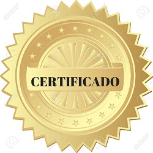

Nuestras Certificaciones
Nuestro objetivo primordial es que el primer acercamiento al inglés constituya una experiencia memorable y estimulante para niños de entre 7 a 13 años, y su objetivo es que la primera experiencia de aprendizaje de inglés sea motivadora. Los niños son evaluados en sus habilidades de lectura, escritura, comprensión oral y expresión oral para mostrar qué tan bien pueden usar el inglés en contextos realistas.
Los niveles A1, 2 y 3 son apropiados para adultos y jóvenes de 12 años en adelante. Los niveles 4 y 5 están reconocidos por múltiples universidades británicas e instituciones de educación superior, por lo que están diseñados para jóvenes a partir de 17 años.